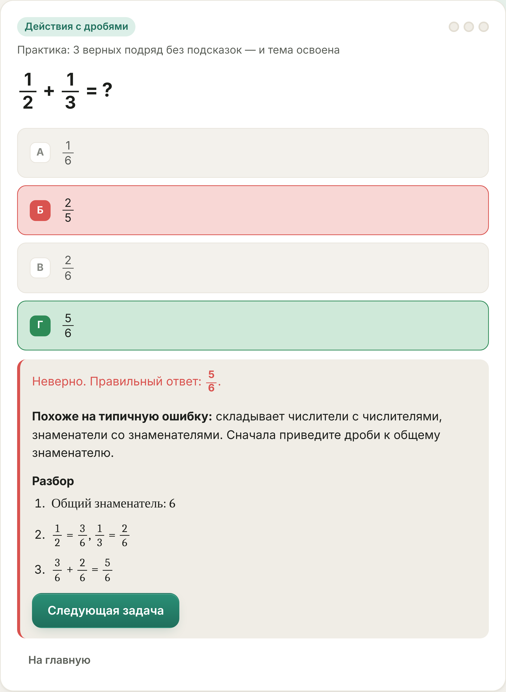
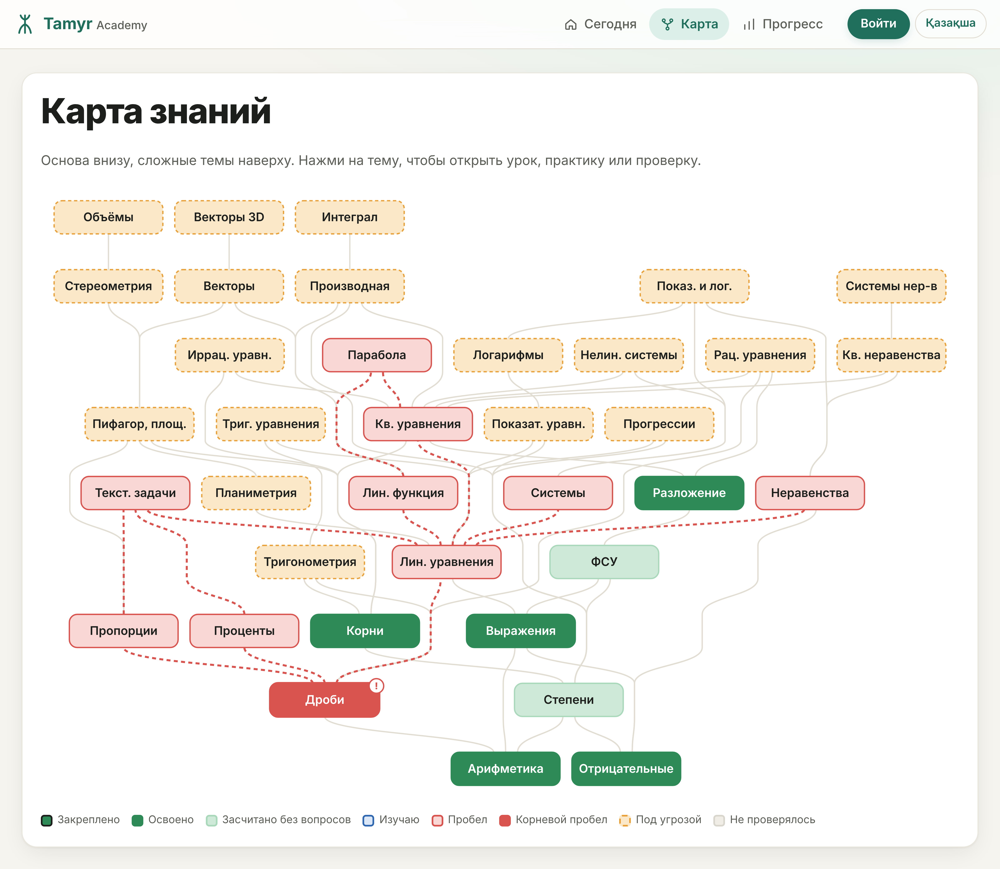

TamyrEdu: Tracing Math Errors
to Their Root Cause
An adaptive diagnostic engine that searches a prerequisite knowledge graph and reads wrong answers as evidence of misconceptions — built as an offline-capable web tutor in Russian and Kazakh.
Zharkynuly Eren
Kydyrkhan Olzhas
01Abstract
School mathematics is cumulative: a student who fails quadratic equations may really be missing fractions from Grade 6. Mock exams report where an error occurred, not why. TamyrEdu is a web tutor that searches a prerequisite graph of 36 ENT mathematics topics, uses tagged wrong answers as evidence of specific misconceptions, and reports the root gap with a bottom-up study plan. On 1,000 held-out simulated students it recovered 89.8% of true root gaps at 86.7% precision. It has not yet been evaluated with real students.
02Introduction & problem
of 15-year-olds in Kazakhstan reached baseline proficiency in mathematics in PISA 2022. The OECD average is 69%.[1]
The ENT is Kazakhstan’s university entrance exam. Its mathematics topics form a prerequisite structure,[2] but a mock ENT returns only a score per topic, so students revise the topic they failed while the cause sits lower. Four educators we interviewed (Sept 2026) each described this pattern unprompted.
03Objectives
Can a short adaptive test find the prerequisite topic that causes a student’s errors, not only the topic where they appear?
- Model ENT mathematics as a prerequisite graph with misconception-tagged answers.
- Locate root gaps in few questions, robustly to guessing.
- Turn the diagnosis into learning: lesson, practice, spaced review.
- Show teachers the root gaps of a whole class.
- Report accuracy and limits transparently.
04Methodology: searching the graph for the root
9 levels
links
items
misconceptions
tagged (of 648)
One real run of the engine, step by step
- 1Quadratic equations ✗✗
Two wrong: a gap. Descend to its prerequisites. - 2Factoring ✓✓
Clean mastery, so the topics beneath it are inferred without questions. - 3Square roots ✓✓ mastered.
- 4Linear equations ✗✗
A gap re-opens inferred topics under it: a root must be confirmed by answers. - 5Brackets & like terms ✓✓ confirmed.
- 6Fractions ✗✗
Both wrong options carry fraction misconception tags. - 7Order of operations ✓✓
Nothing is broken beneath fractions. - 8Fractions ✗ re-check
Lead of 3 wrong: root gap confirmed in 15 questions.
Simulated student with one hidden gap (fractions), goal “Quadratic equations”, engine v2026.10.30, seed 4. Topic names translated from the app.

A wrong answer says more than “wrong”
Item from the bank: 1/2 + 1/3 = ? The screenshot shows the app’s feedback after choosing 2/5 (red): it names the typical mistake, then walks through the solution.
| 5/6 | ✓ correct |
| 2/5 | tag: adds numerators and denominators → home topic Fractions |
| 2/6 | tag: adds numerators without a common denominator → Fractions |
| 1/6 | untagged wrong answer; “I don’t know” also counts as wrong, with no tag |
What the student sees: the knowledge map

1 2 3 4Authentic screenshot of the built-in demo student (13 Nov 2026; interface in Russian, Kazakh also available). 1Root gap: Fractions. 2Where errors surfaced: Quadratic equations; red dashed links trace every gap down to the root. 3At risk (amber, dashed): untested topics that rest on a gap. 4Inferred (light green): counted as mastered without questions. The team mapped the 36 topics onto all 18 topics of the official ENT mathematics specification, at basic level.[5]
05System & AI components
Turquoise = AI in use; dashed = built, switched off. Vanilla HTML/CSS/JS on GitHub Pages; Supabase with row-level security; CI runs browser and database tests.
06Results
Simulation, not classroom data. 1,000 virtual students unseen during tuning; goal: 17-topic algebra foundation.
| Condition | Recall | Prec. | Fully correct map |
|---|---|---|---|
| Hold-out set, current engine | 89.8 | 86.7 | |
| Earlier engine, no root re-check | 89.6 | 85.2 | |
| More lucky guesses (25%) | 83.2 | 79.3 | |
| Careless on known topics (85%) | 87.2 | 76.5 | |
| No noise (logic check) | 100 | 100 |
Student model, designed by the team, so an upper bound: 92% correct on known topics; on unknown ones 20% lucky guesses, and 70% of errors follow a typical misconception. Test length: about 10 questions with no gaps, 35 with one root gap.
07Conclusion
- A transparent rule on a prerequisite graph can name the cause of errors, not only the failed topic, and its accuracy falls gradually as answers get noisier.
- Knowledge spaces[2] and diagnostic distractors[4] are established ideas. Our contribution is joining them into a root-cause search for the ENT curriculum that works offline in two languages.
- Next: a classroom pilot comparing diagnoses with teacher judgement and mock-ENT results.
Limitations
- No real-student data yet. All accuracy figures come from our own student model.
- Graph, items and lessons were AI-assisted and are not yet reviewed by teachers; the Kazakh translation is not yet proofread.
- Basic-level items only: 6 per topic, no figures. A student with a gap answers about 35 questions.